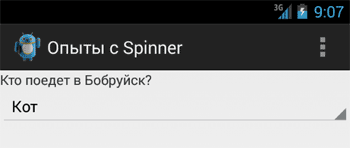
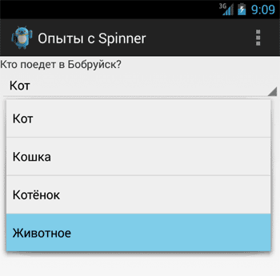
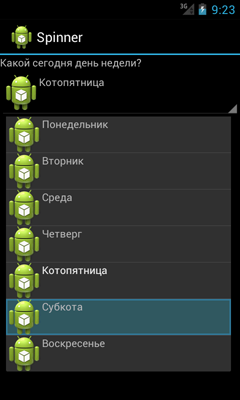
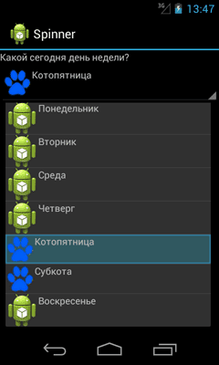
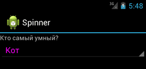

/* Моя кошка замечательно разбирается в программировании. Стоит мне объяснить проблему ей - и все становится ясно. */
John Robbins, Debugging Applications, Microsoft Press, 2000

/* Моя кошка замечательно разбирается в программировании. Стоит мне объяснить проблему ей - и все становится ясно. */
John Robbins, Debugging Applications, Microsoft Press, 2000
Общая информация
Быстрый старт
Используем адаптер
За честные выборы! - что выбрал пользователь
Тонкая настройка
Не выбирать элемент при запуске
Забудьте про setPrompt()
Режим android:spinnerMode="dialog"
Виджет Spinner похож на выпадающий список (ComboBox), используемый в OC Windows. В закрытом состоянии элемент показывает одну строчку, при раскрытии выводит список в виде диалогового окна с переключателями.
Находится в папке Form Widgets.

Сначала покажу быстрый способ использования элемента. При добавлении элемента на экран отображается просто полоска со строкой Item1. В основном настройка происходит программным путем. Но можно и через XML. Добавим в строковый файл ресурсов strings.xml несколько элементов массива:
<string-array name="catlist">
<item>Барсик</item>
<item>Мурзик</item>
<item>Васька</item>
<item>Рыжик</item>
</string-array>
Теперь осталось в атрибуте android:entries указать на созданный массив и элемент Spinner будет заполнен данными. Запустите проект и проверьте.
<Spinner
android:id="@+id/spinner1"
android:layout_width="match_parent"
android:layout_height="wrap_content"
android:entries="@array/catlist" />
Если нужно из программы узнать, как пункт из выпадающего списка выбран в Spinner, то можно использовать такой код, например, при нажатии кнопки:
String strChoose = mySpinner.getSelectedItem().toString();
tv.setText(strChoose); // выводим выбранный пункт в TextView
Если вам нужно получить выбранный элемент сразу в момент выбора, то используйте метод setOnItemSelectedListener(), который описан ниже.
Как и в случае с элементом ListView, элемент Spinner использует адаптер данных для связывания содержимого из набора данных с каждым пунктом в списке. Для загрузки данных нужно:


Данные в закрытом и раскрытом состоянии Spinner отображает по разному. Поэтому необходимо создавать макеты шаблонов для обоих состояний. Android предоставляет несколько своих собственных ресурсов для Spinner для простых задач. Например, есть ресурс android.R.layout.simple_spinner_item для создания представления для каждого элемента списка. Ресурс android.R.layout.simple_spinner_dropdown_item служит шаблоном для раскрывающего списка.
Создадим строковый массив в файле strings.xml:
<string-array name="animals">
<item>Кот</item>
<item>Кошка</item>
<item>Котёнок</item>
<item>Животное</item>
</string-array>
Загрузим строковый массив с именем animals в экземпляр класса ArrayAdapter при помощи метода createFromResource():
// Получаем экземпляр элемента Spinner
final Spinner spinner = (Spinner)findViewById(R.id.spinner1);
// Настраиваем адаптер
ArrayAdapter<?> adapter =
ArrayAdapter.createFromResource(this, R.array.animals, android.R.layout.simple_spinner_item);
adapter.setDropDownViewResource(android.R.layout.simple_spinner_dropdown_item);
// Вызываем адаптер
spinner.setAdapter(adapter);
Запустив программу, вы увидите работающий пример, как на картинках, представленных выше.
По умолчанию выводится первый элемент списка. С помощью метода setSelection() можно установить нужный элемент по умолчанию, указав индекс из строкового ресурса.
spinner.setSelection(2);
Нам интересно узнать, что именно выбрал пользователь из списка и обработать эту информацию.
Нам нужно получить выбранный пользователем пункт в элементе Spinner при помощи метода setOnItemSelectedListener() и реализовать метод onItemSelected() класса AdapterView.OnItemSelectedListener:
spinner.setOnItemSelectedListener(new AdapterView.OnItemSelectedListener() {
public void onItemSelected(AdapterView<?> parent,
View itemSelected, int selectedItemPosition, long selectedId) {
String[] choose = getResources().getStringArray(R.array.animals);
Toast toast = Toast.makeText(getApplicationContext(),
"Ваш выбор: " + choose[selectedItemPosition], Toast.LENGTH_SHORT);
toast.show();
}
public void onNothingSelected(AdapterView<?> parent) {
}
});
Теперь при выборе любого пункта вы получите всплывающее сообщение о выбранном пункте. Обратите внимание, что нам также пришлось реализовать вызов обратного вызова onNothingSelected().
В начале статьи показывался более простой способ с использованием метода getSelectedItem(), который достаточен для большинства случаев.
Если в приложении вы изменили состав выпадающего списка, то необходимо сообщить элементу Spinner, чтобы он показывал обновленный список. Сделать это можно при помощи метода адаптера notifyDataSetChanged().
adapter.notifyDataSetChanged();
Вы можете установить собственный фон, но не можете установить, к примеру, цвет и размер текста в настройках свойств. В предыдущих примерах мы видели, что при подключении к адаптеру используются системные разметки android.R.layout.simple_spinner_item и android.R.layout.simple_spinner_dropdown_item. Ничто не мешает вам посмотреть исходники данных файлов и создать собственные файлы разметок, которые потом можно подключить к адаптеру.
Давайте создадим собственную разметку с значками. В папке res/layout создаём файл row.xml:
<?xml version="1.0" encoding="utf-8"?>
<LinearLayout xmlns:android="http://schemas.android.com/apk/res/android"
android:layout_width="fill_parent"
android:layout_height="wrap_content"
android:orientation="horizontal" >
<ImageView
android:id="@+id/icon"
android:layout_width="wrap_content"
android:layout_height="wrap_content"
android:src="@drawable/ic_launcher" />
<TextView
android:id="@+id/weekofday"
android:layout_width="wrap_content"
android:layout_height="wrap_content" />
</LinearLayout>
Осталось в коде заменить две строки на одну:
// ArrayAdapter<?> adapter = ArrayAdapter.createFromResource(this,
// R.array.animals, android.R.layout.simple_spinner_item);
// adapter.setDropDownViewResource(android.R.layout.simple_spinner_dropdown_item);
// Подключаем свой шаблон с значками
ArrayAdapter<String> adapter = new ArrayAdapter<String>(this,
R.layout.row, R.id.weekofday, DayOfWeek);

В примере использовался один общий файл, но можете создать два отдельных шаблона для закрытого и раскрытого вида элемента. Например, так (простейший вариант):
<?xml version="1.0" encoding="utf-8"?>
<TextView xmlns:android="http://schemas.android.com/apk/res/android"
android:id="@+id/spinnertext"
android:layout_width="wrap_content"
android:layout_height="wrap_content"
android:textSize="40sp"
android:textColor="@color/buttontext" />
<?xml version="1.0" encoding="utf-8"?>
<TextView xmlns:android="http://schemas.android.com/apk/res/android"
android:id="@+id/spinnerdropdown"
android:singleLine="true"
android:layout_width="fill_parent"
android:layout_height="wrap_content"
android:textColor="@color/buttontext"
android:textSize="40sp" />
В принципе, вы можете установить свой значок для каждого пункта, вам нужно создать свой адаптер под свои нужды. Создадим новый класс на основе ArrayAdapter и реализуем задачу. Теперь у двух любимых дней недели будет выводиться лапочка.
package ru.alexanderklimov.spinner;
import ...
public class SpinnerActivity extends Activity {
String[] DayOfWeek = { "Понедельник", "Вторник", "Среда", "Четверг",
"Котопятница", "Субкота", "Воскресенье" };
/** Called when the activity is first created. */
@Override
public void onCreate(Bundle savedInstanceState) {
super.onCreate(savedInstanceState);
setContentView(R.layout.main);
// Получаем экземпляр элемента Spinner
final Spinner spinner = (Spinner) findViewById(R.id.spinner1);
// Подключаем свой шаблон с разными значками
MyCustomAdapter adapter = new MyCustomAdapter(SpinnerActivity.this,
R.layout.row, DayOfWeek);
// Вызываем адапетр
spinner.setAdapter(adapter);
spinner.setPromptId(R.string.chooseday);
spinner.setSelection(2, true);
spinner.setOnItemSelectedListener(new OnItemSelectedListener() {
@Override
public void onItemSelected(AdapterView<?> parent, View view,
int pos, long id) {
// TODO Auto-generated method stub
}
@Override
public void onNothingSelected(AdapterView<?> arg0) {
// TODO Auto-generated method stub
}
});
}
public class MyCustomAdapter extends ArrayAdapter<String> {
public MyCustomAdapter(Context context, int textViewResourceId,
String[] objects) {
super(context, textViewResourceId, objects);
// TODO Auto-generated constructor stub
}
@Override
public View getDropDownView(int position, View convertView,
ViewGroup parent) {
// TODO Auto-generated method stub
return getCustomView(position, convertView, parent);
}
@Override
public View getView(int position, View convertView, ViewGroup parent) {
// TODO Auto-generated method stub
return getCustomView(position, convertView, parent);
}
public View getCustomView(int position, View convertView,
ViewGroup parent) {
// TODO Auto-generated method stub
// return super.getView(position, convertView, parent);
LayoutInflater inflater = getLayoutInflater();
View row = inflater.inflate(R.layout.row, parent, false);
TextView label = (TextView) row.findViewById(R.id.weekofday);
label.setText(DayOfWeek[position]);
ImageView icon = (ImageView) row.findViewById(R.id.icon);
if (DayOfWeek[position] == "Котопятница"
|| DayOfWeek[position] == "Субкота") {
icon.setImageResource(R.drawable.paw_on);
} else {
icon.setImageResource(R.drawable.ic_launcher);
}
return row;
}
}
}

В сети нашёл пример программной установки цвета и размера текста для первой строчки элемента в закрытом состоянии. Может кому пригодится.
spinner.setOnItemSelectedListener(new OnItemSelectedListener() {
@Override
public void onItemSelected(AdapterView<?> parent, View view, int pos,
long id) {
// TODO Auto-generated method stub
((TextView) parent.getChildAt(0)).setTextColor(Color.MAGENTA);
((TextView) parent.getChildAt(0)).setTextSize(12);
}
@Override
public void onNothingSelected(AdapterView<?> arg0) {
// TODO Auto-generated method stub
}
});

Иногда хочется, что при запуске не выбирался первый элемент списка, как это происходит по умолчанию. Решение в лоб - добавить первым элементом пустую строку или текст "Выберите..." не слишком красив, так как при раскрытии списка мы увидим эти элементы, которые только портят картину. В сети нашёл вариант, использующий собственный адаптер.
private String[] cats = { "Васька", "Мурзик", "Барсик", "Рыжик" };
@Override
public void onCreate(Bundle savedInstanceState) {
super.onCreate(savedInstanceState);
setContentView(R.layout.activity_test);
Spinner spinner = (Spinner) findViewById(R.id.spinner1);
CustomAdapter adapter = new CustomAdapter(this,
android.R.layout.simple_spinner_item, cats);
adapter.setDropDownViewResource(android.R.layout.simple_spinner_dropdown_item);
spinner.setAdapter(adapter);
spinner.setOnItemSelectedListener(new OnItemSelectedListener() {
@Override
public void onNothingSelected(AdapterView<?> parent) {
}
@Override
public void onItemSelected(AdapterView<?> parent, View view,
int pos, long id) {
// Set adapter flag that something has been chosen
CustomAdapter.flag = true;
}
});
}
package ru.alexanderklimov.fortest;
import android.content.Context;
import android.view.View;
import android.view.ViewGroup;
import android.widget.ArrayAdapter;
import android.widget.TextView;
public class CustomAdapter extends ArrayAdapter {
private Context context;
private int textViewResourceId;
private String[] objects;
public static boolean flag = false;
public CustomAdapter(Context context, int textViewResourceId,
String[] objects) {
super(context, textViewResourceId, objects);
this.context = context;
this.textViewResourceId = textViewResourceId;
this.objects = objects;
}
@Override
public View getView(int position, View convertView, ViewGroup parent) {
if (convertView == null)
convertView = View.inflate(context, textViewResourceId, null);
if (flag != false) {
TextView tv = (TextView) convertView;
tv.setText(objects[position]);
}
return convertView;
}
}
Попробуйте этот вариант, может он подойдёт вам.
В старых версиях Android 2 для компонента Spinner можно было вывести заголовок с помощью методов setPrompt() или setPromptId(). В Android 4 и выше заголовки не выводятся, поэтому смысла использовать эти методы для новых проектов нет, хотя они и не приводят к ошибке. Используйте, если вам важна совместимость.
У компонента есть "секретный" атрибут android:spinnerMode, у которого можно установить значение dialog. В этом случае при раскрытии списка задняя активность затемняется. Это хорошо заметно на белом фоне. Проверьте самостоятельно.
<Spinner
android:id="@+id/spinner"
android:layout_width="match_parent"
android:layout_height="wrap_content"
android:spinnerMode="dialog" />